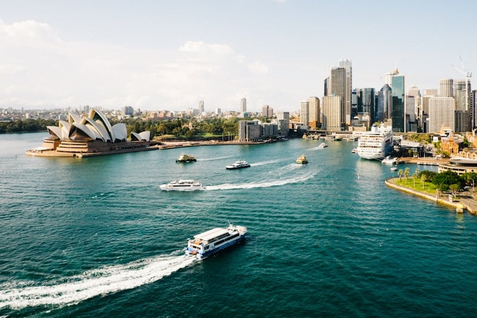

Back to Adventures
Sydney exceeded every expectation. The harbour is even more stunning in person, with the Opera House and Harbour Bridge creating an unforgettable skyline.
Beyond the famous landmarks, I discovered secret coastal walks, vibrant neighborhoods like Newtown and Surry Hills, and some of the freshest seafood I've ever tasted at the Sydney Fish Market.
Trip Highlights
Sydney Opera House
Bondi to Coogee walk
Harbour Bridge climb
Fresh seafood
Photo Locations
Photo Gallery

Sydney Opera House at sunset
Bondi Beach
Sydney Harbour Bridge